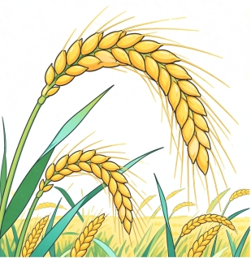

练习 · 语言文字运用
寒露物候与观物取象
物候词语可以用形象化的名称记录人们对自然节律的观察。
导读
文体与题材
物候随笔
文本出处
据《人民日报》2025年10月7日《“鸿雁来”与“鸿雁来宾”差异在哪》节选并改编。
内容脉络
从寒露气温和鸿雁南飞写起，比较“鸿雁来”和“鸿雁来宾”，再将物候命名与候鸟迁徙的先后批次相联系。
内容主旨
物候词语可以用形象化的名称记录人们对自然节律的观察。
阅读重点
比较“起来”的趋向、起始和聚合义。看图释意要把画面可见事实和由“小满”推得的文化联想分开。
原文
原文按结构分节；随文内容可定位至对应段落。
阅读下面的文字，完成下面小题。
物候引入：由寒露的气温和鸿雁南飞引出两个节气的命名差异。
寒露是二十四节气的第十七个节气、秋季的第五个节气，每年的寒露，一般在十月初期到来。《说文解字》中解释：“寒，冻也。”①与白露相比，②寒露气温更低。③寒露时节，④大地呈现出一派天高气爽、层林染透的深秋。⑤鸿雁南飞，⑥是秋日人们熟知的风景。“鸿雁”是白露和寒露两个秋季节气的物候标识，即白露第一候“鸿雁来”，寒露第一候“鸿雁来宾”。从白露到寒露，同一片天空中飞过的都是由北向南的鸿雁，“来”与“来宾”差异究竟在哪？一个“宾”字，道尽了时序之妙、文化之美。
比较命名：解释“来”与“来宾”的先后关系，借主客相迎呈现迁徙批次。
从“来”到“来宾”，一字之差藏秋意。从字面上看，“鸿雁来”中的“来”字，有“初来”“先来”之意。“宾”字在此处并非“宾客”的泛称，而有“后续者”“晚来者”之意。在古籍中，就有“雁以仲秋先至者为主，季秋后至者为宾”的记载。把“来”与“来宾”联系起来，文字便有了层次分明的画面感——白露时节率先南下的鸿雁就像是回到家中的“主人”，迎接着寒露时节姗姗来迟的“客人”。这一字之别的精准运用，如同一把刻度尺，丈量着从仲秋到季秋的气候变化。
观察印证：将不同时段的雁群与观测记录对读，说明物候标识怎样记录时序。
从“来”到“来宾”，一字之间可窥见先人体物之敏锐精微。鸿雁是典型的冬候鸟，白露时节，暑气渐消，鸿雁感知秋凉，就会离开北方的繁殖地，南迁至较为温暖的越冬地。但古人通过细致的观察发现，雁群南飞是有批次的。________________。及至寒露，秋深寒重，逐暖南下的雁群气势更大。这与现代观测记录符合。9月初至中旬，候鸟南迁启动。10月上中旬，正是鸿雁迁徙高峰。所以，无论是“鸿雁来”，还是“鸿雁来宾”，都是季节更迭、时序有常的报告。它以候鸟迁徙为轴线，标注秋天的轨迹，捕捉自然节律，在节气征候中提示着顺天应时的生活理念。
第1题 · 句式搭配
文中标序号的句子有两处存在语病，请指出其序号并修改，使语言准确流畅，逻辑严密，不得改变原意。
参考答案1展开 / 收起
参考作答
④改为“大地呈现出一派天高气爽、层林染透的深秋景象”。
⑥可按文章来源改为“是人们熟知的秋日风景”。
审题与考查点
依原题要求从编号处选出两处，修改涉及气温比较和景象描写的表述。
文本分析
作答依据查看证据 ↗
④中“一派”和“呈现出”都要求后面给出可以观察的景象。补出中心语“景象”后，“深秋”限定景象所属的时节。⑥改后，“人们熟知的”修饰整个“秋日风景”，“秋日”直接限定“风景”，该句与文章来源一致。
题目校读
原卷参考答案栏给出②、④及⑥，详解取②、④。②“与白露相比，寒露气温更低”沿用了文章来源的表达。语境允许把比较对象理解为两个节气的气温，补写“时节的”可以显化关系。⑥原序也容许把“秋日”理解为“人们熟知”的时间。④的搭配问题最明确，第二处宜视作减少修饰歧义的编辑选择。
知识点
比较句可省略双方共有的比较维度，规范修改时可以显化省略的成分。判断宾语残缺时，可连查谓语和数量短语与宾语中心语能否搭配。
解题方法
先读连贯的①②，从“比什么”和“比哪一方面”两处检验比较关系。再追问④中“大地呈现出什么”，用“景象”收束前面的修饰语。
易误辨析
仅添“的”写成“寒露的气温”，清晰度提升有限。把④的“深秋”换成“秋天”，仍未补出能与“一派”相配的中心语。
答案组织与检核
④应补出能够和“呈现出”“一派”搭配的中心语。⑥应写清所熟知的对象是秋日风景。若改②，应保持白露与寒露的气温比较，说明补出成分的理由。
第2题 · 时序衔接
下列填入文中横线处的句子，衔接最恰当的一项是（ ）
A．白露时，北方繁殖地的暑气已经完全消散，大批鸿雁开始集结
B．白露时，南迁序幕虽应时而启，但天空中的雁阵尚显稀疏
C．随着秋凉越来越明显，白露过后，南迁的鸿雁数量才慢慢多了起来
D．白露过后，随着秋寒加剧，更多鸿雁加入南迁队伍。
参考答案2展开 / 收起
参考作答
B。
审题与考查点
选出能说明鸿雁分批南迁并与寒露景象连贯的句子。
文本分析
A项查看证据 ↗
“暑气已经完全消散”比前文“暑气渐消”说得绝对，后半句突出集结，未写初迁雁阵的状态。
B项查看证据 ↗
“南迁序幕”承接“有批次”，“尚显稀疏”与下文寒露时的“气势更大”构成前后对照。
C项查看证据 ↗
在时序上可以衔接寒露，但重点转到白露过后数量增加，跳过了需要作为对照起点的白露初迁。
D项查看证据 ↗
同样着眼于白露后增加的雁群，“更多鸿雁”的比较对象并未在此前具体呈现。
知识点
补写句要照顾时间锚点、核心话题及前后对比。此处“及至”提示先交代较早时节的景象。
解题方法
先圈出横线前后的“有批次”“及至寒露”“更大”，推定空缺要写较早、规模较小的一批，再把选项代入复读。
易误辨析
把时间先后误当成唯一标准。C、D也在寒露前提供了过渡，却弱化了白露初迁与寒露盛迁的对应。
答案组织与检核
所选句须同时承接“有批次”，交代白露初迁，并为寒露雁阵变大留下清晰的比较起点。
第3题 · 趋向补语
下列选项中“起来”的含义与文中第二段加点词“起来”含义相同的一项是（ ）
A．他从椅子上站了起来，准备去倒杯水。
B．下雨了，快把衣服收起来。
C．天气突然冷起来了。
D．已经七点了，你该起来了。
参考答案3展开 / 收起
参考作答
B。
审题与考查点
辨析同形词语“起来”在不同动词和句式中的语境义。
文本分析
A项查看证据 ↗
“站了起来”指身体向上改变姿势，“起来”表示趋向。
B项查看证据 ↗
“收起来”表示将衣物收拢并放置，如同“联系起来”表示将两者建立联系，均突出动作所达成的结果状态。
C项查看证据 ↗
“冷起来”表示天气开始变冷，着眼于一种状态的开始。
D项查看证据 ↗
“你该起来了”中的“起来”可单独作谓语，指起身或起床。
知识点
“起来”可表示实在趋向、状态开始，也可表示动作结果，如聚合、收拢或建立联系。句法位置和前接词都能限制解读。
解题方法
先判断“起来”是否单用，再找其前接动词或形容词，分别试换成“向上”“开始变”“形成某种结果”。
易误辨析
只看事物状态发生变化就选C；几种用法都有变化，须分清变化是开始、方向还是动作结果。
答案组织与检核
选项中的“起来”须与“联系起来”一样，指出动作之后形成或达到的状态。
第4题 · 观物取象
欧阳修《五律·小满》有言：“小满天逐热，温风沐麦圆。园中桑树壮，棚里菜瓜甜……”民间谚语常说：“小满小满，麦粒渐满。”下图呈现了节气“小满”的典型物候景象。请运用此文本所体现出来的“观物取象”的思维方式，描述此图的画面内容并阐释其中的人文寓意。

参考答案4展开 / 收起
参考作答
画面中，细长的叶片间，几枝金黄色的麦穗颗粒鼓起，穗尖向下弯垂。结合“小满小满，麦粒渐满”，画面表现出麦粒正在变饱满的物候。
饱满而下垂的麦穗，可寄寓有了收获也应保持谦逊。“渐满”则让人想到成长尚有余地，处事可以留有分寸。
审题与考查点
描述图中可见的麦穗，结合小满物候说明由自然形态联想到的人文寓意。
文本分析
作答依据查看证据 ↗
材料把白露先到的鸿雁比作主人，把寒露后到的鸿雁比作客人，由迁徙先后联想到主宾秩序。题图同样可以由物及人。麦粒饱满而穗头向下，可联想到有所收获仍保持谦逊。“渐满”强调生长尚在继续，可引出为变化留有余地的理解。
题目校读
题面署欧阳修《五律·小满》。科普中国所载同一首诗未署作者，现有出处不足以确证欧阳修署名。画面解读可以依据图像、题给谚语和阅读材料。
知识点
“观物取象”在本题中的路径是观察可辨认的形态或变化，借其特征建立物象与人事情理之间的联系。
解题方法
先用两三个可见细节还原画面，再借题面谚语解释物候，最后逐一说明每个物象细节如何引出寓意。
易误辨析
只写“小满寓意知足”，读者看不出寓意从何而来。仅凭麦穗颜色断定小麦已经成熟，也超出图示和题面提供的信息。
答案组织与检核
画面描述须准确，物候须扣住“渐满”，寓意须说明麦穗形态或生长阶段与人事情理的对应。合理联想均可论证。